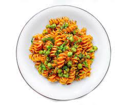

SITHELO'S RESTAURANT

Pasta
Time:
1 hr
Yield:
2
Ingredients
1 packet ROYCO® Four Cheese Pasta Sauce
15 ml (1 Tbls) olive oil
200 g courgettes, thinly sliced
200 g cherry / Rosa tomatoes, halved
1 tsp salt and pepper to taste
150 g Penne pasta, cooked & well drained.
100 g grated cheddar cheese
Steps
Prepare ROYCO® sauce as per instructions on pack. Heat oil & stir-fry courgettes & tomatoes.
Add garlic, salt & pepper.
Remove from heat & stir in the parsley, cooked penne, prepared sauce & eggs in that order.
Return to stove & gently cook frittata without stirring, for 5-10 minutes (until it starts to set).
Sprinkle with the grated cheese & paprika.
Grill until cheese is melted.
Cool slightly, cut into wedges & carefully remove from pan.